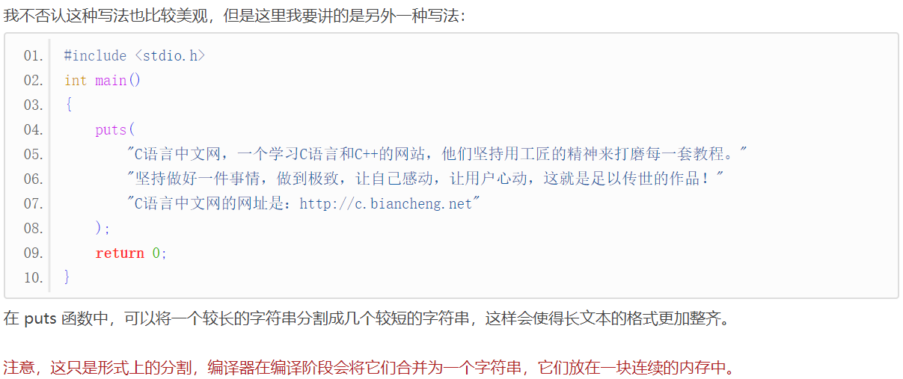

【本文结构】
- 1、C语言变量和数据类型
- 变量
- 数据类型
- 2、在屏幕上输出各种类型的数据
- puts()
- printf() 和格式控制符
- 如何在字符串中书写长文本
- 3、C语言中的整数
- 整型的长度
- sizeof操作符
- 不同整型的输出
- 4、C语言中的二进制数、八进制数、十六进制数
- 5、C语言中的正负数及其输出
- 6、整数在内存中是如何存储的
- 原码、反码、补码
- 7、C语言整数的取值范围、数值溢出
- 计算机要处理的数据（诸如数字、文字、符号、图形、音频、视频等）是以二进制的形式存放在内存中的；
- 我们将8个比特（Bit）称为一个字节（Byte），并将字节作为最小的可操作单元。
- 变量（Variable）
- int a;创造了一个变量 a，我们把这个过程叫做变量定义。
- a 是我们给这块区域起的名字；当然也可以叫其他名字。
- 这个语句的意思是：在内存中找一块区域，命名为 a，用它来存放整数。它仅仅是在内存中找了一块可以保存整数的区域。
- a=123;把 123 交给了变量 a，我们把这个过程叫做给变量赋值；又因为是第一次赋值，也称变量的初始化，或者赋初值。
- 赋值是指把数据放到内存的过程。
- a 中的整数不是一成不变的，只要我们需要，随时可以更改。更改的方式就是再次赋值。
- 因为 a 的值可以改变，所以我们给它起了一个形象的名字，叫做变量（Variable）。
- 可以先定义变量，再初始化
int abc;
abc=999;
- 也可以在定义的同时进行初始化
int abc=999;
- C语言支持多个变量的连续定义(连续定义的多个变量以逗号,分隔，并且要拥有相同的数据类型；变量可以初始化，也可以不初始化。）
int a,b,c;
float m = 10.9, n = 20.56;
char p, q='@';
- 数据类型（Data Type）
- 顾名思义，数据类型用来说明数据的类型，确定了数据的解释方式/处理方式，还指明了数据长度，让计算机和程序员不会产生歧义。 上面的int a;就表明，这份数据是整数，不能理解为像素、声音等。
- 在C语言中，每一种数据类型所占用的字节数都是固定的，知道了数据类型，也就知道了数据的长度。
- 数据长度（Length），是指数据占用多少个字节。占用的字节越多，能存储的数据就越多，对于数字来说，值就会更大，反之能存储的数据就有限。
- 在C语言中，有多种数据类型，例如：
说明 | 字符型 | 短整型 | 整型 | 长整型 | 单精度浮点型 | 双精度浮点型 | 无类型 |
数据类型 | char | short | int | long | float | double | void |
长度 ( 在32位环境中) | 1 | 2 | 4 | 4 | 4 | 8 |
- 数据是放在内存中的，在内存中存取数据要明确三件事情：
- 数据存储在哪里（通过变量名）
- 数据的长度（通过数据类型）
- 以及数据的处理方式（通过数据类型）
- 强类型语言一旦确定了数据类型，就不能再赋给其他类型的数据，除非对数据类型进行转换。
- 弱类型语言没有这种限制，一个变量，可以先赋给一个整数，然后再赋给一个字符串。
- puts()： puts 是 output string 的缩写，只能用来输出字符串，不能输出整数、小数、字符等；
- printf()：是 print format 的缩写，意思是“格式化打印”。这里所谓的“打印”就是在屏幕上显示内容，与“输出”的含义相同，所以我们一般称 printf 是用来格式化输出的。
- printf 比 puts 更加强大，不仅可以输出字符串，还可以输出整数、小数、单个字符等，并且输出格式也可以自己定义，例如：
- 以十进制、八进制、十六进制形式输出；
- 要求输出的数字占 n 个字符的位置；
- 控制小数的位数。
- puts 输出完成后会自动换行，而 printf 不会，要自己添加换行符，这是 puts 和 printf 在输出字符串时的一个区别。
int a = 100, b = 200;
char c = '@'; // 字符用单引号包围，字符串用双引号包围
puts("C语言中文网");
printf("a=%d, b=%d, c=%c\n", a, b, c); // %d 与后面的变量是一一对应的，第一个 %d 对应第一个变量，第二个 %d 对应第二个变量……
//我们也可以不用变量，将数据直接输出
printf("a=%d, c=%c, money=%f\n", 100, '@', 93.96);
//printf(a) 这种方式在C语言中是错误的，在python语言中才可以，具体语句为：print(a)。
- 格式控制符均以%开头，后跟其他字符。它指明了以何种形式输出数据。printf 支持更多的格式控制，例如：
- %d 表示以十进制形式输出一个整数。
- %c：输出一个字符。c 是 character 的简写。
- %s：输出一个字符串。s 是 string 的简写。
- %f：输出一个小数。f 是 float 的简写。
- \n是一个整体，组合在一起表示一个换行字符。换行符是 ASCII 编码中的一个控制字符，无法在键盘上直接输入，只能用这种特殊的方法表示，被称为转义字符，我们将在《C语言转义字符》一节中有具体讲解，请大家暂时先记住\n的含义。
- //后面的为注释。注释用来说明代码是什么意思，起到提示的作用，可以帮助我们理解代码。注释虽然也是代码的一部分，但是它并不会给程序带来任何影响，编译器在编译阶段会忽略注释的内容，或者说删除注释的内容。我们将在《C语言标识符、关键字和注释》一节中详细讲解。
- money 的输出值并不是 93.96，而是一个非常接近的值，这与小数本身的存储机制有关，这种机制导致很多小数不能被精确地表示，即使像 93.96 这种简单的小数也不行。我们将在《小数在内存中是如何存储的，揭秘诺贝尔奖级别的设计（长篇神文）》一节详细介绍。
python中上述程序语句类似为：
>>>a, b = 100, 200
>>>c = '@'
>>> print("a=%d, b=%d", a,b)
a=%d, b=%d 100 200
>>> print("a=%d, b=%d"%(a,b))
a=100, b=200
- 如何在字符串中书写长文本



short int a, b = 10;
long int m = 102023;
// 下面这种写法更简洁，实际开发中常用
short a, b = 10;
long m = 102023;
- 整型的长度
- C语言并没有严格规定 short、int、long 的长度，只做了宽泛的限制：
- short 至少占用 2 个字节。
- int 建议为一个机器字长。32 位环境下机器字长为 4 字节，64 位环境下机器字长为 8 字节。
- short 的长度不能大于 int，long 的长度不能小于 int。
- 总结起来，它们的长度（所占字节数）关系为： 2 ≤ short ≤ int ≤ long
- 这就意味着，short 并不一定真的”短“，long 也并不一定真的”长“，它们有可能和 int 占用相同的字节数。
操作系统 | short | int | long | 说明 |
16位环境下 | 2 | 2 | 4 | 16位环境多用于单片机和低级嵌入式系统，在PC和服务器上已经见不到了。 |
32位的 Windows、Linux 和 Mac OS | 2 | 4 | 4 | PC和服务器上的 32 位系统占有率也在慢慢下降，嵌入式系统使用 32 位越来越多。 |
64位的 Windows | 2 | 4 | 4 | 目前我们使用较多的PC系统为 Win XP、Win 7、Win 8、Win 10、Mac OS、Linux，在这些系统中，short 和 int 的长度都是固定的，分别为 2 和 4，大家可以放心使用，只有 long 的长度在 Win64 和类 Unix 系统下会有所不同，使用时要注意移植性。 |
64位的类Unix系统（包括 Unix、Linux、Mac OS、BSD、Solaris 等） | 2 | 4 | 8 |
- sizeof 操作符
- sizeof 用来获取某个数据类型或变量所占用的字节数，如果后面跟的是变量名称，那么可以省略( )，如果跟的是数据类型，就必须带上( )。
- 需要注意的是，sizeof 是C语言中的操作符，不是函数，所以可以不带( )，后面会详细讲解。
#include <stdio.h>
int main()
{
short a = 10;
int b = 100;
int short_length = sizeof a; //后面跟的是变量名称，那么可以省略()
int int_length = sizeof(b);
int long_length = sizeof(long); //后面跟的是数据类型，就必须带上()
int char_length = sizeof(char);
printf("short=%d\nint=%d\nlong=%d\nchar=%d\n", short_length, int_length, long_length, char_length);
return 0;
}
上面程序在 Win64 环境下的运行结果为：
short=2
int=4
long=4
char=1
- 不同整型的输出
- 使用不同的格式控制符可以输出不同类型的整数，它们分别是：
- %hd用来输出 short int 类型，hd 是 short decimal 的简写；
- %d用来输出 int 类型，d 是 decimal 的简写；
- %ld用来输出 long int 类型，ld 是 long decimal 的简写。
- 在编写代码的过程中，我建议将格式控制符和数据类型严格对应起来，养成良好的编程习惯。
- 当然，如果你不严格对应，一般也不会导致错误，例如，很多初学者都使用%d输出所有的整数类型（原文中有例子）。
- 当使用%d输出 short，或者使用%ld输出 short、int 时，不管值有多大，都不会发生错误，因为格式控制符足够容纳这些值。
- 当使用%hd输出 int、long，或者使用%d输出 long 时，如果要输出的值比较小，一般也不会发生错误，如果要输出的值比较大，就很有可能发生错误（原文中有例子）。
- 读者需要注意，当格式控制符和数据类型不匹配时，编译器会给出警告，提示程序员可能会存在风险。
- 编译器的警告是分等级的，不同程度的风险被划分成了不同的警告等级，而使用%d输出 short 和 long 类型的风险较低，如果你的编译器设置只对较高风险的操作发出警告，那么此处你就看不到警告信息。
- 二进制（0b 或 0B）
- 二进制由 0 和 1 两个数字组成，使用时必须以0b或0B（不区分大小写）开头。
- 读者请注意，标准的C语言并不支持上面的二进制写法，只是有些编译器自己进行了扩展，才支持二进制数字。换句话说，并不是所有的编译器都支持二进制数字，只有一部分编译器支持，并且跟编译器的版本有关系。
- Visual C++ 6.0 不支持。
- Visual Studio 2015 支持，但是 Visual Studio 2010 不支持；可以认为，高版本的 Visual Studio 支持二进制数字，低版本的 Visual Studio 不支持。
- GCC 4.8.2 支持，但是 GCC 3.4.5 不支持；可以认为，高版本的 GCC 支持二进制数字，低版本的 GCC 不支持。
- LLVM/Clang 支持（内嵌于 Mac OS 下的 Xcode 中）。
- 注意，虽然部分编译器支持二进制数字的表示，但是却不能使用 printf 函数输出二进制，这一点比较遗憾。当然，通过转换函数可以将其它进制数字转换成二进制数字，并以字符串的形式存储，然后在 printf 函数中使用%s输出即可。
- 八进制（0）
- 八进制由 0~7 八个数字组成，使用时必须以0开头（注意是数字 0，不是字母 o）。
- 十六进制（0x 或 0X）
- 十六进制由数字 0~9、字母 A~F 或 a~f（不区分大小写）组成，使用时必须以0x或0X（不区分大小写）开头
- 二进制数、八进制数、十六进制数的输出
- 一个数字不管以何种进制来表示，都能够以任意进制的形式输出。 通过 printf 函数，可以将它们以八进制、十进制和十六进制的形式输出。
- 八进制数字和十进制数字不区分大小写，所以格式控制符都用小写形式。
- 有些编译器支持大写形式，只不过行为和小写形式一样；
- 有些编译器不支持大写形式，可能会报错，也可能会导致奇怪的输出。
- 注意，虽然部分编译器支持二进制数字的表示，但是却不能使用 printf 函数输出二进制，这一点比较遗憾。当然，通过转换函数可以将其它进制数字转换成二进制数字，并以字符串的形式存储，然后在 printf 函数中使用%s输出即可。
- 区分不同进制数字的一个简单办法就是，在输出时带上特定的前缀。在格式控制符中加上#即可输出前缀，例如 %#x、%#o、%#lX、%#ho 等，请看下面的代码：
- 十进制数字没有前缀，所以不用加#。如果你加上了，那么它的行为是未定义的，有的编译器支持十进制加#，只不过输出结果和没有加#一样，有的编译器不支持加#，可能会报错，也可能会导致奇怪的输出；但是，大部分编译器都能正常输出，不至于当成一种错误。
| short | int | long | |
八进制 | %ho | %o | %lo |
十进制 | %hd | %d | %ld |
十六进制 | 小写：%hx 大写：%hX | 小写：%x 大写：%X | 小写：lx 大写：lX |
#include <stdio.h>
// BHD conversion
// number system
int main()
{
short a = 0b1010110; //二进制数
int b = 02713; //八进制数
long c = 0X1DAB83; //十六进制数
printf("八进制：a=%ho, b=%o, c=%lo\n", a, b, c); //以八进制形式输出
printf("十进制：a=%hd, b=%d, c=%ld\n", a, b, c); //以十进制形式输出
printf("十六小：a=%hx, b=%x, c=%lx\n", a, b, c); //以十六进制形式输出（字母小写）
printf("十六大：a=%hX, b=%X, c=%lX\n", a, b, c); //以十六进制形式输出（字母大写）
/* 在格式控制符中加上#即可输出不同进制的前缀 */
puts("\n输出不同进制并带前缀(十进制除外)：");
printf("八进制：a=%#ho, b=%#o, c=%#lo\n", a, b, c); //八进制输出
printf("十进制：a=%hd, b=%d, c=%ld\n", a, b, c); //十进制输出，十进制没有前缀，不用加#。
printf("十六小：a=%#hx, b=%#x, c=%#lx\n", a, b, c); //十六进制（字母小写）
printf("十六大：a=%#hX, b=%#X, c=%#lX\n", a, b, c); //十六进制（字母大写）
puts("\n");
return 0;
}
输出结果：
八进制：a=126, b=2713, c=7325603
十进制：a=86, b=1483, c=1944451
十六小：a=56, b=5cb, c=1dab83
十六大：a=56, b=5CB, c=1DAB83
输出不同进制并带前缀(十进制除外)：
八进制：a=0126, b=02713, c=07325603
十进制：a=86, b=1483, c=1944451
十六小：a=0x56, b=0x5cb, c=0x1dab83
十六大：a=0X56, b=0X5CB, c=0X1DAB83
- short、int、long 在赋初值时都可以带上正负号。如果所赋的初值不带正负号，默认就是正数。
- C语言规定，把内存的最高位作为符号位。以 int 为例，它占用 32 位的内存，0~30 位表示数值，31 位表示正负号。
- 在编程语言中，计数往往是从0开始， 这和我们平时从 1 开始计数的习惯不一样，大家要慢慢适应，培养编程思维。
- C语言规定，在符号位中，用 0 表示正数，用 1 表示负数。
- short、int 和 long 类型默认都是带符号位的，符号位以外的内存才是数值位。 如果不希望设置符号位，可以在数据类型前面加上 unsigned 关键字，例如：
unsigned short a = 12;
//unsigned short int a = 12; //这种方式也可以
unsigned int b = 1002; //可以再简写为 unsigned b = 1002;
unsigend long c = 9892322;
- 这样，short、int、long 中就没有符号位了，所有的位都用来表示数值，正数的取值范围更大了。这也意味着，使用了 unsigned 后只能表示正数，不能再表示负数了。
- 不加 unsigned 的数字称为有符号数，能表示正数和负数，加了 unsigned 的数字称为无符号数，只能表示正数。
- 请读者注意一个小细节，如果是unsigned int类型，那么可以省略 int ，只写 unsigned。
- 无符号数的输出
- 上一节只是“笼统”地介绍了一遍不同进制形式的输出。现在已经讲到了正负数，就有必要再深入地说一下。
- 严格来说，格式控制符和整数的符号是紧密相关的，具体就是：
- %d 以十进制形式输出有符号数；
- %u 以十进制形式输出无符号数；
- %o 以八进制形式输出无符号数；
- %x 以十六进制形式输出无符号数。
- 下表全面地总结了不同类型的整数，以不同进制的形式输出时对应的格式控制符（--表示没有对应的格式控制符）。
short | int | long | unsigned short | unsigned int | unsigned long | |
八进制 | -- | -- | -- | %ho | %o | %lo |
十进制 | %hd | %d | %ld | %hu | %u | %lu |
十六进制 | -- | -- | -- | 小写：%hx 大写：%hX | 小写：%x 大写：%X | 小写：lx 大写：lX |
- 如何以八进制和十六进制形式输出有符号数呢？很遗憾，printf 并不支持，也没有对应的格式控制符。在实际开发中，也基本没有“输出负的八进制数或者十六进制数”这样的需求。
- 有读者可能会问，上节我们也使用 %o 和 %x 来输出有符号数了，为什么没有发生错误呢？这是因为： 可以说，“有符号正数的最高位是 0”这个巧合才使得 %o 和 %x 输出有符号数时不会出错。
- 再次强调，不管是以 %o、%u、%x 输出有符号数，还是以 %d 输出无符号数，编译器都不会报错，只是对内存的解释不同了。%o、%d、%u、%x 这些格式控制符不会关心数字在定义时到底是有符号的还是无符号的：
- 你让我输出无符号数，那我在读取内存时就不区分符号位和数值位了，我会把所有的内存都看做数值位；
- 你让我输出有符号数，那我在读取内存时会把最高位作为符号位，把剩下的内存作为数值位。
- 说得再直接一些，我管你在定义时是有符号数还是无符号数呢，我只关心内存，有符号数也可以按照无符号数输出，无符号数也可以按照有符号数输出，至于输出结果对不对，那我就不管了，你自己承担风险。
int d = -0b110010; //换算成十进制为 -50
printf("十进制：d=%d\n", d);
int e = -0101; //八进制负数，换算成十进制为 -65
printf("十进制：d=%d\n", e);
printf("八进制：d=%#o\n", e); // 输出值与所赋初值不一致，说明一个负数在定义和赋初值的时候可以用八进制表示，但不要用八进制格式输出，这会导致数值出错。
int f = -0XA0; //十六进制负数，换算成十进制为 -160
printf("十进制：e=%d\n", f);
printf("十六大：e=%#X\n", f); // 输出值与所赋初值不一致，说明一个负数在定义和赋初值的时候可以用十六进制表示，但不要用十六进制格式输出，这会导致数值出错。
输出结果为：
十进制：d=-50
十进制：d=-65
八进制：d=037777777677
十进制：e=-160
十六大：e=0XFFFFFF60
- 下面的代码进行了全面的演示：
- 对于绝大多数初学者来说，b、m、n 的输出结果看起来非常奇怪，甚至不能理解。
- 当以 %x 输出 b 时，结果应该是 0x80000001；
- 当以 %hd、%d 输出 m、n 时，结果应该分别是 -7fff（这里表示成十六进制）、-0。
- 但是实际的输出结果和我们推理的结果却大相径庭，这是为什么呢？
- 其实这跟整数在内存中的存储形式以及读取方式有关。
- 整数在写入内存之前可能会发生转换，在读取时也可能会发生转换，而我们没有考虑这种转换，所以才会导致推理错误。（这种转换与补码有关）
#include<stdio.h>
int main()
{
//有符号数
short a = 0100; //八进制
int b = -0x1; //十六进制
long c = 720; //十进制
//无符号数
unsigned short m = 0xffff; //十六进制
unsigned int n = 0x80000000; //十六进制
unsigned long p = 100; //十进制
//以无符号的形式输出有符号数
printf("a=%#ho, b=%#x, c=%lu\n", a, b, c);
//以有符号的形式输出无符号数(只能以十进制形式输出)
printf("m=%hd, n=%d, p=%ld\n", m, n, p);
return 0;
}
输出结果为：
a=0100, b=0xffffffff, c=720
m=-1, n=-2147483648, p=100
- 加法和减法是计算机中最基本的运算，它们由硬件直接支持。为了提高加减法的运算效率，硬件电路要设计得尽量简单。然而，简化硬件电路是有代价的，这个代价就是有符号数在存储和读取时都要进行转化。
- 这个转化就是： 在计算机内存中，整数一律采用补码的形式来存储。这意味着，当读取整数时还要采用逆向的转换，也就是将补码转换为原码。将补码转换为原码也很简单：先减去 1，再将数值位取反即可。
- 补码这种天才般的设计，一举达成了下面两个目标，简化了硬件电路。
- 把符号位和数值位等同起来，让它们一起参与运算，不再加以区分，这样硬件电路就变得简单了。
- 加法和减法也可以合并为一种运算，就是加法运算，因为减去一个数相当于加上这个数的相反数。
- 原码、反码、 补码
- 正数：取正数的原码、反码和补码相同
- 负数：
- 负数的反码是将原码中除符号位以外的所有位（数值位）取反。
- 负数的补码是其反码加 1。


- 在现代操作系统中，short、int、long 的长度分别是 2、4、4 或者 8，它们只能存储有限的数值，当数值过大或者过小时，超出的部分会被直接截掉，数值就不能正确存储了，我们将这种现象称为溢出（Overflow）。
- 无符号数的取值范围

- 有符号数的取值范围

- 计算取值范围也要从补码入手。 我们以 char 类型为例，从下表中找出它的取值范围：

- 淡黄色背景的那一行是我要重点说明的。计算机规定，1000 0000 这个特殊的补码就表示 -128（有符号数的时候）。
- 如果按照传统的由补码计算原码的方法，那么 1000 0000 是无法计算的，因为计算反码时要减去 1，1000 0000 需要向高位借位，而高位是符号位，不能借出去，所以这就很矛盾。
- 是不是该把 1000 0000 作为无效的补码直接丢弃呢？然而，作为无效值就不如作为特殊值，这样还能多存储一个数字。
- 为什么偏偏是 -128 而不是其它的数字呢？
- 首先，-128 使得 char 类型的取值范围保持连贯，中间没有“空隙”。
- 其次，我们再按照“传统”的方法计算一下 -128 的补码：
- -128 的数值位的原码是 1000 0000，共八位，而 char 的数值位只有七位，所以最高位的 1 会覆盖符号位，数值位剩下 000 0000。最终，-128 的原码为 1000 0000。
- 接着很容易计算出反码，为 1111 1111。
- 反码转换为补码时，数值位要加上 1，变为 1000 0000，而 char 的数值位只有七位，所以最高位的 1 会再次覆盖符号位，数值位剩下 000 0000。最终求得的 -128 的补码是 1000 0000。
- -128 从原码转换到补码的过程中，符号位被 1 覆盖了两次，而负数的符号位本来就是 1，被 1 覆盖多少次也不会影响到数字的符号。
- 你看，虽然从 1000 0000 这个补码推算不出 -128，但是从 -128 却能推算出 1000 0000 这个补码，这么多么的奇妙，-128 这个特殊值选得恰到好处。
- 关于零值和最小值
- 仔细观察上表可以发现，在 char 的取值范围内只有一个零值，没有+0和-0的区别，并且多存储了一个特殊值，就是 -128，这也是采用补码的另外两个小小的优势。
- 如果直接采用原码存储，那么0000 0000和1000 0000将分别表示+0和-0，这样在取值范围内就存在两个相同的值，多此一举。另外，虽然最大值没有变，仍然是 127，但是最小值却变了，只能存储到 -127，不能存储 -128 了，因为 -128 的原码为 1000 0000，这个位置已经被-0占用了。
- 数值溢出的程序 例子
#include <stdio.h>
int main()
{
unsigned a = 0x100000000; //相当于 unsigned int a = 0x100000000;
int b = 0xffffffff;
printf("a=%u, b=%d\n", a, b);
return 0;
}
运行结果：
a=0, b=-1
- 变量 a 为 unsigned int 类型，长度为 4 个字节，能表示的最大值为 0xFFFFFFFF，而 0x100000000 = 0xFFFFFFFF + 1，占用33位，已超出 a 所能表示的最大值，所以发生了溢出，导致最高位的 1 被截去，剩下的 32 位都是0。也就是说，a 被存储到内存后就变成了 0，printf 从内存中读取到的也是 0。
- 变量 b 是 int 类型的有符号数，在内存中以补码的形式存储。0xffffffff 的数值位的原码为 1111 1111 …… 1111 1111，共 32 位，而 int 类型的数值位只有 31 位，所以最高位的 1 会覆盖符号位，数值位只留下 31 个 1，所以 b 的原码为：1111 1111 1111 1111 1111 1111 1111 1111。 这也是 b 在内存中的存储形式。